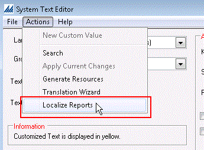

Localizing a paperwork document/report essentially means that you are putting the structure of a non-English language into the document/report. You need to do this step so that when the system renders a document to print(and the actual translation text for a language is retrieved), the document fields will match the language you are using for SCALE. The localizing process is performed for every language that you have installed on your server. Note that you should not perform this action during peak work times, as system processing may be affected. You can localize documents from the Actions Menu in the System Text Editor Window (see picture below). Note that the system will run the localizing process for any SQL Server Reporting Services (SSRS) documents that exist (i.e. you do not need to run this process separately for each type of document).

Each field on a document contains an embedded formula which the system uses to decide what language to display the field's text label in. For example:
Select {?LANG}
Case "en" : "<Output English Text String>"
Case "fr" : "<Output French Text String>"
Case "jp" : "<Output Japanese Text String>"
Case "ko" : "<Output Korean Text String>"
Case "zh" : "<Output Simplified Chinese Text String>"
Default : "<English Text String>"
Miscellaneous Technical Setup Overview